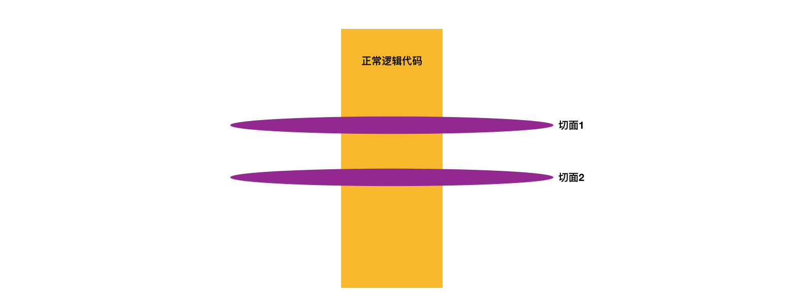
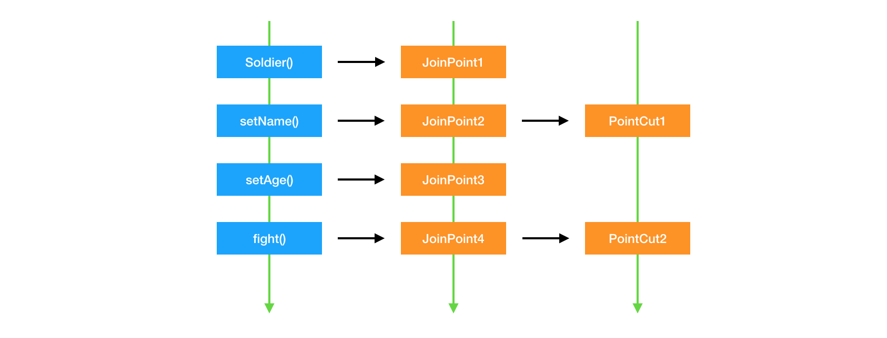

Spring系列之面向切面编程
面向切面编程（AOP）是 Spring 的另外一大核心，但 Spring 容器与 AOP 却不耦合，这意味着如果不需要 AOP，就不需要引入相关依赖。
Spring 中引入 AOP 主要用于两个方面：
- 提供声明式企业级服务，比如声明式事务管理
- 让 Spring 的用户可以在面向对象编程中（OOP）使用面向切面编程（AOP）
通过下面这张图就可以表现 AOP 的核心之处。正常的逻辑代码都是从上往下写的，是纵向的。而 AOP 则是在这些纵向的代码中插入一个切面，在这个切面里面假如一些逻辑，这些代码是横向的，这样就不会影响现有的逻辑。

AOP 的基本概念
在第一篇文章里面，简单介绍了一些 AOP 的相关概念。这里使用日志这个例子，来详细的说明 AOP 的概念。
看下面这段代码，现在有一个 Soldier 类，类中有一个 fight 方法，这个类就是上图中的黄色部分，正常的逻辑代码，现在有一个需求，要记录下 fight 过程，正常来说，当然也可以在 fight 中使用 Logger 来记录日志，带上这样就需要修改原有的代码，而且代码中会充斥着各种记录日志的代码。
这个问题可以使用 AOP 来解决，FightLog 就是上图中的紫色部分，这些代码不会影响到原有的逻辑，却可以完成记录 fight 日志的功能。
public class Soldier {
private Weapon weapon;
public void Soldier(Weapon weapon) {
this.weapon = weapon;
}
public void fight() {
weapon.attack();
}
}
@Aspect
@Component
public class FightLog {
@Pointcut("execution(* cn.rayjun.spring5demo.container.Soldier.fight(..))")
public void pointcut() {}
@Before("pointcut()")
public static void fightLogBefore(JoinPoint j) {
System.out.println(j);
System.out.println("FightBefore");
}
@After("pointcut()")
public static void fightLogAfter() {
System.out.println("FightAfter");
}
@AfterReturning("pointcut()")
public static void fightLogReturn() {
System.out.println("FightReturn");
}
@AfterThrowing("pointcut()")
public static void fightLogThrowing() {
System.out.println("FightThrowing");
}
@Around("pointcut()")
public static void fightAround(ProceedingJoinPoint pr) {
try {
System.out.println("FightAroundBefore");
pr.proceed();
System.out.println("FightAroundAfter");
} catch (Throwable throwable) {
throwable.printStackTrace();
System.out.println("FightAroundThrowing");
}
System.out.println("FightAround");
}
}
在上面的 FightLog 中，有 @Aspect，@Before，@After 这些注解都代表中特定的概念。
AOP 中的关键概念如下：
- 切面（Aspect）
- 连接点（Join point）
- 切点（Pointcut）
- 通知（Advice）
- 引入（Introduction）
- 织入（Weaving）
如果只看上面这些概念绝对让人很头疼，但是实际上，这些概念并不难，需要重点理解的也就切面、切点、通知三个。下面来详细看一下每个概念。
切面 切面其实很简单，就是上面图中的紫色部分，代表着一个单独的类，使用 @Aspect 注解（当然也可以使用 xml 配置）来定义。在这个类中可以定义一系列操作，这些操作就是由切点和通知组成，新加的这些操作不会影响原有的代码。
连接点和切点 其实连接点和切点表达的是同样的东西。如下图：

在正常的逻辑代码中调用方法，修改属性的操作都可以作为一个连接点，这个连接点可以作为切面的切点。现在明白了，被切面所切入的连接点就叫做切点。
在使用 AOP 的过程中，可以在切点上获取连接点的所有信息，包括方法名称，参数等等。
通知 通知更好理解，通知就是在切点中进行的操作，通知有如下的种类：
- @Before: 前置通知，在进入切点之前执行
- @AfterReturning: 返回通知，在切点正常返回后执行
- @AfterThrowing: 异常通知，在切点抛出异常后执行
- @After: 后置通知，在正常执行或者抛出异常后都会执行
- @Around: 环绕通知，这个比较特殊，这个通知方法会影响正常逻辑代码的执行，如果要使用这个通知，就必须要调用 ProceedingJoinPoint 的 proceed 方法才不影响正常的逻辑代码的执行。
引入和织入
这两个概念了解一下就可以，引入是指可以向现有的类添加新方法或者属性，织入则是把切面应用到目标方法并创建新的代理对象的过程。
这亮光概念涉及到 AOP 底层的实现，后续再详细说明。
Spring AOP 默认是使用 JDK 的动态代理来实现，如果有必要，也款已换成 CGLIB 代理来实现。
AOP 的配置及使用
Spring 容器默认是不启用 AOP 的，使用 AOP 需要引入额外的依赖，如下：
<dependency>
<groupId>org.springframework</groupId>
<artifactId>spring-aop</artifactId>
<version>5.2.2</version>
</dependency>
<dependency>
<groupId>org.aspectj</groupId>
<artifactId>aspectjweaver</artifactId>
<version>1.9.5</version>
</dependency>
<dependency>
<groupId>org.springframework</groupId>
<artifactId>spring-aspects</artifactId>
<version>5.2.2</version>
</dependency>
同样，AOP 可以通过 xml 配置和 Java 配置。
XML 配置如下，只需要加上 <aop:aspectj-autoproxy/> 这个配置即可。
<?xml version="1.0" encoding="UTF-8"?>
<beans xmlns="http://www.springframework.org/schema/beans"
xmlns:xsi="http://www.w3.org/2001/XMLSchema-instance"
xmlns:context="http://www.springframework.org/schema/context"
xmlns:aop="http://www.springframework.org/schema/aop"
xsi:schemaLocation="http://www.springframework.org/schema/beans
https://www.springframework.org/schema/beans/spring-beans.xsd
http://www.springframework.org/schema/context
https://www.springframework.org/schema/context/spring-context.xsd
http://www.springframework.org/schema/aop
https://www.springframework.org/schema/aop/spring-aop.xsd">
<context:component-scan base-package="cn.rayjun.spring5demo" />
<aop:aspectj-autoproxy/>
</beans>
Java 配置更加简单，只需要加上 @EnableAspectJAutoProxy 注解就可以了。
@Configuration
@EnableAspectJAutoProxy
@ComponentScan(basePackages = "cn.rayjun.spring5demo")
public class SoldierConfig {
}
配置完成之后就可以定义切面，任意一个类，被 @Aspect 注解之后就可以作为一个切面了。
@Aspect
@Component
public class FightLog {
}
在定义好了切面之后，就可以定义切点来实现自定义的功能了，从上面我们知道了切点就是被选择的连接点，定义一个切点的方式如下：
execution(* cn.rayjun.spring5demo.container.Soldier.fight(..))
- excution 表示这个切点的操作在连接点方法执行时触发。
*表示返回任意的类型，就是对这个连接点方法的返回值没有要求- 中间就是连接点的全路径
..表示的是对输入参数也没有要求，可以接受任意参数
这样一来，方法名称是 fight，以及这个方法的多个重载方法都可以被该切点切入。
切点定义好了之后就需要给这个切点自定义操作：
@Before("execution(* cn.rayjun.spring5demo.container.Soldier.fight(..))")
public static void fightLogBefore() {
System.out.println("FightBefore");
}
假如说这个切点要在多个通知上被使用，可以用如下的定义：
@Pointcut("execution(* cn.rayjun.spring5demo.container.Soldier.fight(..))")
public void pointcut() {}
@Before("pointcut()")
public static void fightLogBefore() {
System.out.println("FightBefore");
}
@After("pointcut()")
public static void fightLogAfter() {
System.out.println("FightAfter");
}
上面说到了切点就是被选择的连接点，假如说现在需要在切点中获取连接点的一些信息和状态，直接就可以在切点中加上一个 JoinPoint 的参数，这个就表示连接点，通过这个连接点就可以做一些有意义的操作，根据当前连接点的状态来做一些操作，比如记日志，做统计
@Before("pointcut()")
public static void fightLogBefore(JoinPoint j) {
System.out.println(j);
System.out.println("FightBefore");
}
最后还需要说明的是环绕通知，这个比较特殊，这个通知的囊括了之前说的所有的通知，在这个通知中如果不调用 ProceedingJoinPoint 的 procceed 方法，原有的正常逻辑就无法执行，但是它的强大之处在于可以在这里自由的实现上述的各种通知，如下：
@Around("pointcut()")
public static void fightAround(ProceedingJoinPoint pr) {
try {
System.out.println("FightAroundBefore");
pr.proceed();
System.out.println("FightAroundAfter");
} catch (Throwable throwable) {
throwable.printStackTrace();
System.out.println("FightAroundThrowing");
}
System.out.println("FightAround");
}
AOP 是 Spring 重要的组成部分，除了生僻的概念比较多，其他的也不是很复杂。